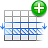

5. Graphical User Interface¶
5.1. Introduction¶
This chapter presents the major components of the graphical user interface and describes their functionalities. It is assumed that the reader is familiar with the Key Terminology.
5.2. Main Window¶
Fig. 5.1 The layout of the DTOcean main window
The layout of the DTOcean main window is shown in Fig. 5.1. At the top are menus and a toolbar. Below these there is a central contextual area and 3 docks (Pipeline, Simulations and System). All docks can be closed to increase the size of the contextual area, and the pipeline and simulations docks can be overlapped (the default layout has the pipeline dock overlapping the simulations dock). An overview of each of these components is given below with further detail provided in the later sections of this chapter.
- Context Area:
- The context area can be used to add, inspect and save data (be that single values or tables); view and save plots; and compare the values of variables between design modules and simulations. These modes are switched using the “View” menu or toolbar icons.
- Pipeline Dock:
- The pipeline dock lists the variables within the active simulation and displays their status (i.e. if they contain data or not). It shows the order of execution of the modules chosen for the simulation. It allows the level at which the outputs are shown and the “scope” of the results from assessments to be set. Finally, the pipeline can be used to “reset” a simulation prior to execution of a particular module.
- Simulations Dock:
- The simulations dock lists all simulations within a project and indicates the currently active simulation. It can be used to change the active simulation, create clones of existing simulations, and rename simulations, as required.
- System Dock:
- The system dock displays logging messages from the DTOcean interface, modules and assessments. These messages are also recorded in log files that can be accessed using the “Help” menu.
5.4. Pipeline Dock¶
Fig. 5.2 The pipeline dock, its controls, sections and top level branches
5.4.1. Variable Tree¶
The pipeline dock provides an ordering to the data entry and execution of modules and assessments, and to the visualisation of results, using a tree structure familiar to a number of scientific computational packages. As seen in Fig. 5.2 the tree is divided into two main sections, described as follows:
- Configuration:
- This section is used to set the OEC type for a project, set database filtering options, present the order of execution of modules, and collect data necessary to execute the modules and assessments.
- Results:
- This section contains the results produced by the assessments and design modules
The top level branches within each section have the following purposes:
- Scenario:
- Contains branches for project preparation, such as OEC type selection, and database filtering options. This branch is only used in the configuration section.
- Modules:
- Each branch within this section represents a module selected for the project. Inputs are collected in the configuration section and outputs given in the results section.
- Assessment:
- Each branch within this section represents an assessment selected for the project. Inputs are collected in the configuration section and outputs given in the results section.
The leaves of each branch in the variable tree represent the input and output variables themselves, as seen in Fig. 5.3. Clicking on a variable in the pipeline will update the context area with data or plots specific to the chosen variable.
Fig. 5.3 Variables are represented as the leaves of the branches
Each variable has an indicator to describe the status of the data it contains. The icon, status and meaning of these indicators are as follows:
| Icon | Status | Meaning |
|---|---|---|
| Satisfied | Data for the variable has been entered / outputted | |
| Required | Data for the variable has not been entered and is required to execute the module or assessment | |
| Optional | Data for the variable has not been entered but is not required to execute the module or assessment | |
| Unavailable | The module has already been executed and data may not be entered for the variable (but can still be viewed) |
5.4.3. Filter¶
Fig. 5.5 Search field for filtering the variable tree
Above the variable tree is a search field, as seen in Fig. 5.5, that can be used to filter out variables whose names do not match the entered text. This can be useful for quickly finding a specific variable. The filter can be cleared by clicking the “X” button to the right of the search field.
5.4.4. Assessment Scope¶
Fig. 5.6 Tool for switching between scopes of the assessment outputs
Following execution of each design module, the chosen assessments are executed twice. The two datasets generated are referred to as “Assessment Scopes”and the meaning of each scope is as follows:
- Module:
- The assessments use only the outputs generated by the executed module.
- Global:
- The assessments use all data collected up to that point, including data entered or calculated prior to running the executed module.
The tool at the very top of the pipeline dock, shown in Fig. 5.6, can be used to change the assessment scope of all simulations in the project, and update the values of the output variables. Note, some output variables may not be available in the module scope as they require inputs from other sources.
5.5. Simulations Dock¶
Fig. 5.7 The simulations dock shows all simulations in the project and indicates which simulation is currently active
The simulations dock is used to view all simulations in the project, identify and set the active simulation, create simulation clones and rename existing simulations.
5.5.1. Simulation List¶
The list of simulations, as seen in Fig. 5.7, shows the names of all simulations within a project. When starting a new project the initial simulation is named “default”. The simulation in bold represents the active simulation; the pipeline will always display the variables of the active simulation. The active simulation can be changed by left-clicking another simulation name. If data or a plot is visible in the context area, this will be updated as the active simulation changes.
Fig. 5.8 Double-click an item in the list to rename the simulation
Simulations can also be renamed by double-clicking an item in the list. A text editor window will open and the new name can be entered, as seen in Fig. 5.8.
5.6. System Dock¶

Fig. 5.9 Log messages are displayed in the system dock
The system dock displays logging messages that allows the user to observe the actions of the underlying system, as seen in Fig. 5.9. Every log message follows the same pattern:
{DATETIME} - {LEVEL} - {ADDRESS} - {MESSAGE}
Descriptions of the parts of the log message pattern are as follows:
| Name | Purpose |
|---|---|
| DATETIME | The date and time of the message |
| LEVEL | The logging level of the message. Can be DEBUG, INFO, WARNING, ERROR, or CRITICAL |
| ADDRESS | The package and (python) module that generated the message |
| MESSAGE | The contents of the message itself |
The system dock can only display a maximum of 99999 messages. The complete logging history is recorded in files that can be accessed using the Help menu.
Which packages and modules generate logs, and at which logging level, can be
modified using the logging config file. To generate the file, run the “Copy
Logger Config (Safe)” program from the DTOcean start menu folder. A file named
logging.yaml will be placed into the
C:\Users\<USERNAME>\AppData\Roaming\DTOcean\dtocean_app\config directory,
which can be edited to modify the logging behaviour of DTOcean [1]. For help
regarding logging configuration files please see the Logging HOWTO section of the Python docs.
5.7. Data Context¶
Fig. 5.10 The layout of the data context
The data context is used to view, enter, edit, import and export numeric or textual data for the currently selected variable in the pipeline. It is divided into three sections with the variable details section and the variable file manager placed above the data widget, as seen in Fig. 5.10.
5.7.1. Variable Details¶
The variables detail section provides information about the currently selected variable in the pipeline.
5.7.2. Variable File Manager¶
The variable file manager is used to load and save data for the selected variable using various file formats. It has two modes (set using the “File mode:” radio buttons), load and save, where the “LOAD” mode is used to add data to a variable from a file and the “SAVE” mode is used to create a file containing a copy of the variable’s data.
The “File path:” field is used to set and display the file path that will be used to load or save the data. It is recommended to populate this field by pressing the “…” button and using the file dialogue to select a path, as seen in Fig. 5.11.
Fig. 5.11 File dialogue for selecting the path of the file to be saved
The path must contain a valid file extension (specific to the data type of the variable), and the extension dictates the type of file. Once a valid file path has been entered, the “OK” button will activate. Clicking “OK” will load or save the data, depending on which mode the file manager is in.
5.7.3. Data Widgets¶
Data widgets are used to both view and enter data such as strings, integers, floating point numbers, tables of numbers, etc. For instance, Fig. 5.10 shows an example of a widget for collecting the coordinates of the export cable landing point.
Each variable in DTOcean has an associated data structure, which (in most cases) has a unique widget for entering and viewing data. Some of the most complex data structures do not have a data widget, and the data can only be saved and loaded using files (or collected from the database).
For variables in the Configuration section of the pipeline, buttons are provided in the bottom right corner of data widgets. The actions of these are as follows:
- OK: commits the data entered to the selected variable
- Cancel: returns the selected variable to its required or optional state
Note, where no data entry widget is available for a variable, only the Cancel button is shown.
5.7.3.1. Table Based Widgets¶
Fig. 5.12 An input data widget with tabulated data
A number of data widgets use a table to collect data, which has additional controls for editing the table, as follows:
| Icon | Purpose |
|---|---|
| Toggle the editing mode of the table | |
|  | Appends a new row to the bottom of the table |
| Removes the row containing the selected cell |
When the table is in editing mode, double-clicking on any cell will allow the data in that cell to be altered. If the cell contains a true-or-false tick-box, these can simply be clicked to change their state. Remember to click the “OK” button to commit edits to the variable, or they will be forgotten.
Care is required when adding data to tables that contain a “Key Identifier” column. These values must be unique for all components used by the electrical sub-systems and mooring and foundations modules. To be certain not to generate a conflict, it is recommended to use values of 10000 or greater for new entries. Note, there is currently no validation of the key identifier values, so conflicts may cause errors during module execution or produce inaccurate results.
5.8. Plots Context¶
Fig. 5.13 The layout of the plots context
The plots context is used to generate plots associated with the currently selected variable in the pipeline, if any are available. It is divided into three sections with the variable details section and the plot manager placed above the plot widget, as seen in Fig. 5.13.
5.8.1. Variable Details¶
The variables detail section provides information about the currently selected variable in the pipeline.
5.8.2. Plot Manager¶
The plot manager serves two functions. Firstly, where more than one plot is available for a variable, it allows the user to select which plot they wish to draw. Secondly, the plot manager allows plots to be saved to file.
The data structure associated with a variable may have a default plot, and, if this plot exists, it will be automatically drawn by the plot context. Additional plots may be available for the variable, which could also utilise other variables (such plots only become available when the data of all variables used is satisfied). These plots can be selected using the “Plot name:” drop-down menu, as seen in Fig. 5.14, and then drawn using the “Plot” button. If you wish to redraw the default plot, click the “Default” button.
Fig. 5.14 The drop-down list contains all available plots for the selected variable
To save the drawn plot to a file, a valid file path must be added to the “File path:” field. It is recommended to populate this field using the dialogue created by the “…” button, as this will ensure a valid file extension is provided. When the path is set, click the “Plot” button to save the plot. The file extension dictates the file type of the plot and the “Plot” button will only become active when a valid extension is used.
An additional control is provided to help set the size of the saved plot (which uses the size on screen by default). By checking the “Custom size” box, the desired width and height (in inches) can be added; an example is shown in Fig. 5.15. Note, the produced plot may not be exactly the chosen size (due to some quirks in the matplotlib plotting library), so trial and error may be required.
Fig. 5.15 A custom size is set for the plot to be saved
5.8.3. Plot Widgets¶
The plot widgets themselves will automatically resize the drawn plot to the available area, but do not provide any further functionality. Presently, input data can not be modified using a plot (such as in GIS software), nor can plots be interacted with (such as zooming and panning). In some cases, there may be multiple ways to display data, e.g. a bar chart versus a pie chart, yet only a single default plot per data structure is provided in DTOcean. It is hoped, in the future, that some of these useful features will be added.
5.9. Comparisons Context¶
Fig. 5.16 The layout of the comparisons context
The comparisons context is used to compare the value of a single variable between modules or examine how a dependant variable changes in response to an independent variable, for a particular module. It is divided into three sections with the module comparison and the simulation comparison tools placed above the data or plot widget, as seen in Fig. 5.13. Note, the comparison context is independent of both the selected variable in the pipeline and the active simulation.
5.9.1. Module Comparison¶
Fig. 5.17 Example module comparison plot, using the module (local) assessment scope
The module comparison tool can be used to compare the value of a single variable between all modules, across multiple simulations. An example of a plot created using this tool is seen in Fig. 5.17. The tool has two modes, “PLOT” and “DATA”, that can be used to generate a plot, or the corresponding table of data, respectively. These are placed into the area below the tool.
After choosing the mode, a variable is selected using the “Variable:” field. Text entered in this field can be used to search the list of variables and a short list of possible matches will be displayed, as shown in Fig. 5.18. After a variable is chosen, clicking the “OK” button will add the plot or tabulated data to the area below. Once the plot or data has been generated, the “Save” button will activate. Clicking “Save” will open a dialogue that allows the plot or data to be saved to a file.
Fig. 5.18 Text entered into the variable field will search the list of variables
If a strategy was used to create a series of simulations, then the default behaviour of the tool is to only use the simulations created by the strategy. This behaviour can be suppressed by checking the “Ignore Strategy” box, after which all simulations will be used in the comparison.
5.9.2. Simulation Comparison¶
The simulation comparison tool can be used to compare the value of a dependent variable to that of an independent variable. The data is examined following execution of a particular module, across multiple simulations. An example of a plot created using this tool is seen in Fig. 5.16. The tool has two modes, “PLOT” and “DATA”, that can be used to generate a plot, or the corresponding table of data, respectively. These are placed into the area below the tool.
The dependent variable is chosen using the “Variable:” field of the Module Comparison tool, as shown in Fig. 5.18. The independent variable and the module used in the comparison are set in the “Variable:” and “Module:” fields of the Simulation Comparison tool, as Fig. 5.19. After the variables and module are chosen, clicking the “OK” button will add the plot or tabulated data to the area below. Once the plot or data has been generated, the “Save” button will activate. Clicking “Save” will open a dialogue that allows the plot or data to be saved to a file.
Fig. 5.19 The independent variable and module are entered into their corresponding fields
If a strategy was used to create a series of simulations, then the default behaviour of the tool is to only use the simulations created by the strategy. This behaviour can be suppressed by checking the “Ignore Strategy” box, after which all simulations will be used in the comparison.
5.10. Saving and Loading¶
When using the “Open…” and “Save As…” actions from the File menu / toolbar, two file types can be used. The options are as follows:
- .dto
- The default file format for storing a DTOcean project
- .prj
- This file format can be used to transfer DTOcean projects to and from the dtocean-core module. Note, strategies are not recorded in this format.
In most cases users should use the .dto format; however the .prj format
is useful when combining the graphical interface for data manipulation and
dtocean-core for execution. See the :ref:`api_guide`, for further
information regarding scripting DTOcean using the dtocean-core module.
5.11. Select Database Dialogue¶
Fig. 5.20 The “local” database has been connected using credentials that were entered within the dialogue but not stored in the credentials file
When the “Select Database…” action is selected from the Data menu / toolbar, the dialogue shown in Fig. 5.20 will open. This dialogue can be used to modify credentials, connect to a database, and import and export (load and dump) the database from and to structured files, respectively.
5.11.1. Working with Credentials¶
Fig. 5.21 Credentials for multiple databases can be added, deleted, modified and saved
The components of the select database dialogue used for working with credentials are shown in Fig. 5.21. There are three action buttons on the left, a list of available credentials to the right of the buttons and then, to the right of the list, a table showing the fields of the credentials. The purposes of the buttons is as follows:
| Name | Purpose |
|---|---|
| Add | Add an empty credentials record to the list of credentials |
| Delete | Delete the credentials record selected in the list of credentials |
| Save | Save to file any modifications to the selected credentials made in the credentials table |
When a credentials record is selected in the “Available:” list, its data is displayed in the “Credentials” table. The “Value” column of this table can be edited by double-clicking on each cell. Modifications to this table are not automatically saved to file, so the user can choose not to store their password in the credentials file (which has a plain text format). The name of the credentials table will change to “Credentials (unsaved)” when new credentials have been entered but not saved. Note, unsaved credentials will be lost if a different record is selected.
5.11.2. Connecting a Database¶
Once the desired credentials have been chosen, clicking the “Apply” button will associate them with the current project. The chosen database name will be displayed in the “Current database:” field at the top of the dialogue. If unsaved credentials have been entered, the name will be appended with “(modified)”. To remove the database connection, click the “Reset” button.
At this stage the dialogue can be closed, by pressing the “Close” button, or the user can undertake operations on the selected database, as discussed in the next section.
5.11.3. Load & Dump¶
Once a database has been connected to the project, the load and dump functionality will activate. This allows export and import between the selected database and structured files.
Selecting the “Load” or “Dump” buttons will open a file dialogue for selecting a directory. This directory should either be empty for the “Dump” command or contain the required file structure for the “Load” command. Further details regarding the structure and modification of the files can be found in the Data Preparation chapter.
Fig. 5.22 The user chooses to restrict database loading and dumping to the “Device” section
For efficiency, the user can also choose to load or dump a subsection of the database, which is selected using the “Select section:” dropdown list, as shown in Fig. 5.22. The database tables accessed using each section are:
| Section | Description |
|---|---|
| All | Every table in the database |
| Device | Only tables specific to devices |
| Site | Only tables specific to sites |
| Other | Only tables specific to reference data |
5.12. Data Requirements Dialogue¶
Fig. 5.23 The data requirements dialogue provides the location of data required to progress
Several actions in DTOcean (e.g. executing modules) require that specific variables are satisfied before the action can be completed. The data requirements dialogue checks the required variables and informs the user which, if any, are still to be satisfied. As seen in Fig. 5.23, when one or more variables are not satisfied, the dialogue will show “FAILED” and provide a list of addresses to the required variables. The address contains the section, branch and item in the pipeline of the variable.
When all the required variables are set, the dialogue will report “PASSED”. The user can now click the “OK” button to complete the chosen action or, if they wish, they can click the “Cancel” button to go back. When the dialogue reports “FAILED” only the Cancel button is active.
5.13. Selection Shuttles¶
Fig. 5.24 Modules are selected for execution by moving them to the right-hand list
Selection shuttles are provided for choosing which modules and assessments will be used in a project. They are activated by the “Add Modules…” and “Add Assessment…” actions. As shown in Fig. 5.24, available modules or assessments in the left-hand list are moved to the right-hand list to select them for execution.
The “Add” button will move the item selected in the left-hand list to the right-hand list, whilst the “Remove” button does the reverse. Clicking the “OK” button will accept the selection and close the dialogue. Clicking the “Cancel” button will close the dialogue without accepting the selection.
5.14. Strategy Manager¶
Fig. 5.25 All strategies available in DTOcean can be chosen and configured using the strategy manager
When the “Select Strategy” action is chosen, the Strategy Manager dialogue, as seen in Fig. 5.25, will open. The strategy manager provides an interface for selecting and configuring all available strategies in DTOcean.
To configure a strategy, simply click an item in the “Available Strategies”
list. The configuration options for the strategy, should there be any, will
then appear in the “Configuration” section of the dialogue. Configuration of
each strategy is unique and further details can be found in the
:ref:`strategies` chapter.
Once the chosen strategy has been configured, the “Apply” button will activate. Clicking the Apply button will associate the strategy to the project and its name will appear in the “Current strategy” label. Note, when a strategy has finished executing, “(completed)” will be added to the strategy name. To clear the strategy for the project, click the “Reset” button (the current strategy label should now read “None”).
5.15. Progress Bar¶
Fig. 5.26 The progress bar is shown during long running processes
When an action is chosen that initiates a long-running process, the progress bar shown in Fig. 5.26 will open. Currently, the progress bar is not capable of estimating time remaining, and simply serves as an indicator that the process is ongoing.
Two actions are available while the progress bar is open. Firstly, the progress bar may be minimised, which will also minimise the main DTOcean window [2]. Secondly, the progress bar can be closed, which will force quit DTOcean. Processes active under the progress bar can not be stopped safely, so a warning, as shown in Fig. 5.27, will be shown to inform the user that bad things may happen.
Fig. 5.27 The warning shown after requesting to close the progress bar
Footnotes
| [1] | If the configuration file already exists the new file will be named
logging.yaml.new. |
| [2] | The title bar of the progress bar may still be visible on the desktop. |